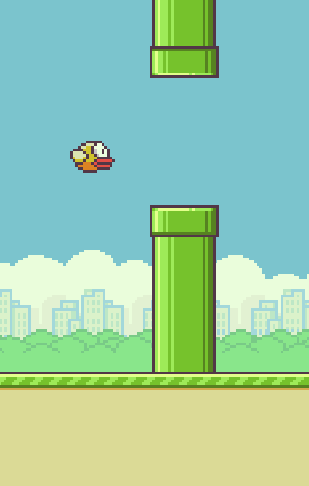

Right now we have the basic environment to build a game on. We've modeled the movement of the bird and the pipes, so we can now work on how they interact with each other and adding some game mechanisms.
Right now the draw function is set up very deliberately by Mr. Sacco so that the drawing functions are separated from the functions that move the items. This will allow us to add a pausing ability to the game using global variables.
Add Variables!
If we want to keep track of the 'pause' state of the game, we're going to need to add more variables. This time we're going to use a boolean value because of how easily it fits with the if statements we'll need. Add a variable named isRunning and initialize it to be true. The idea is that when this variable is true, the game will run like normal, but false would mean that the bird and the pipes do not move.
Interpret the Variables
Now you should change your draw function to be the following:
function draw() {
background(255);
drawBird();
drawPipes();
if( isRunning ){
moveBird();
movePipes();
}
}
The added if statement will only move the pipes and bird when the isRunning is true. Try your sketch twice: once with true assigned to isRunning and once with false assigned to it. When false, all movement should be stopped.
Once you can confirm that isRunning has proper control over the movement, continue on to the next page.
Now that we can pause it's time to determine when to pause, which means we need to see if the pipes overlap with the bird. This is rather complex, so we'll add more functions to organize our process.
Modify your draw function to have a call to checkCollision(), like below:
function draw() {
background(255);
drawBird();
drawPipes();
if( isRunning ){
moveBird();
movePipes();
checkCollision();
}
}
Now add the checkCollision() function to your sketch
fuction checkCollision(){
//set isRunning to true if the bird overlaps any portion of a pipe
}
The purpose of this function is to see if the bird overlaps with either of the pipes, and to pause the program if it does. THIS IS A LOT OF WORK. Each pipe has two different rectangles that the bird needs to be checked against, and there are multiple sets of pipes.
Luckily we've done this before. Go back to the Pong assignment and do two things:
1) Get a copy the useful boxOverlap() function that we use to detect collisions. Paste it to the end of the Flappy Bird sketch, and do not change it at all.
2) Remind yourself how boxOverlap() is used by looking at Pong's bouncePaddle() function. Take note of how boxOverlap() is used to control an if statement there, and look at how the 8 parameters passed in are related to both the ball and the paddle. We are going to use a similar strategy to see if the bird overlaps with the pipes.
Now it's time to implement the checkCollision() function, which is supposed to compare the bird with each of the pipes. We are going to have to make sure that we are careful, as this time it will be trickier. Let's first think about how we would do it for one set of pipes, and then later try to incorporate a loop
The first thing that we should do is try to see if we can get the checkCollision() method to detect when the bird is overlapping with either the top or the bottom portion of the first set of pipes. This means that we're going to specifically use pipeXs[0] and pipeYs[0] as the pipe's location.
Similar to how we handled collision with Pong, you should use an if statement that is driven by the boxOverlap() function to tell if there is a collision. When deciding on the x,y, width, and height of the two rectangles, use the values from drawBird() and pipePair() function as inspiration, keep in mind that the pipeXs[0] and pipeYs[0] should be used in the calculations instead of the pX and pY parameter.
If the one of the two if statements do detect an overlap, they should set the isRunning variable to false, stopping the game.
Test your program by running it and trying to hit the first set of pipes and seeing if it will stop the game. Make sure that the game stops when you hit either the top or bottom pipe, but continues if you pass through the gap. It is okay if you pass through the second set of pipes, as they are not pipeXs[0], pipeYs[0]
The general rule of arrays is that if we can get it working with one location (pipeXs[0], pipeYs[0]), then we can get it working for all the pipes in the array. We just need to think with our loop:
Modify the checkCollision() function to use our array index loop that we've been using:
for( let index = 0; index < pipeXs.length; index++){
//use pipeXs[index] to represent pipeXs[0], pipeXs[1], etc..
}
Inside this loop is where you should place your two if statements, but use pipeXs[index], pipeYs[index] instead of 0s. The loop will cause it to repeat the same if statements, switching to a different value from the array each time.
Adding the loop should give us the ability to lose if we hit any pipe, not just the first set. Run your program and make sure that you can lose by crashing into either of the second set of pipes.
Once the game has stopped, we should be able to restart in some way. One simple thing to do is to attach it to a key press.
Add the keyPressed function to your sketch and use the key variable to detect an 'r' press and reset the game. This means setting all the global variables back to their starting values. You can probably copy most of the setup function to accomplish this.
function keyPressed(){
if( key == "r"){
}
}
Test your sketch by playing a little bit and hitting r. If anything doesn't 'reset', you probably missed a variable.
Only Restart When Paused
Right now there's a possibility of accidentally restarting at any time, even if you're on a hot streak. In reality, we only want to restart when the game is currently paused. Modify the keyPressed function so that it also requires isRunning to be false ( isRunning == false or !isRunning ) before resetting. This will prevent an accidental restart.
By adding the collision detection we've made our job harder for ourselves. Once you know that it works, it's best that we disable it until we need it. Go to the draw function and comment out the call to checkCollision()
//checkCollision();
This will make you invincible again, which will make coding the rest of the assignment easier. When you are ready to release the game to the public, you will bring back this collision check.
Keeping score is relatively simple, but there is a little bit of a challenge when trying to determine when it increase it. First we need to set up our model to keep track of the score
Add a global variable to represent the score and initialize it to 0 in the setup function.
In order to keep with the theme, we'll add a drawScore() function to the sketch.
First update draw:
function draw() {
background(255);
drawBird();
drawPipes();
drawScore();
if( isRunning ){
moveBird();
movePipes();
checkCollision();
}
}
Then add the drawScore() function to your sketch.
function drawScore(){
}
This function should use the text function to draw the score somewhere on the screen. Don't waste time making it too fancy; this is just a proof of concept and will be replaced later.
Test the sketch out multiple times, each with a different value in your score variable to make sure that you're drawing the contents of the variable.
First update your draw function
function draw() {
background(255);
drawBird();
drawPipes();
if( isRunning ){
moveBird();
movePipes();
checkCollision();
scoreCheck();
}
}
And also add the new scoreCheck function:
function scoreCheck(){
}
The scoreCheck() function's purpose is to determine when to increase the score variable. Like before, let's first think about just the first pipe's location (pipeXs[0]) and later modify it to have a loop.
The Wrong Way:
We need to write code that will detect the moment that the pipe moves to the left of 80, where the bird is located.
if( pipeXs[0] <= 80 ){
score++;
}
If you try the above if statement in the scoreCheck() function, you'll see the problem. The pipe is to the left of the bird for many, many frames before the pipe reaches -50 and teleports. This results in the score to increase way too much. The key is to detect the single moment where the pipe has just passed 80 for the first time. Modify the if statement so that it checks when the pipe's x value is in the range from 77 to 80. This is something that should be true for each pipe only once each time it passes the bird, which should limit each pipe to one point.
Test your sketch to make sure that the score only increases from 0 to 1 as the first pipe passes the bird.
Once you feel confident that the first pipe is being scored properly, it's time to again use our array loop to make sure that it happens for all the pipes.
for( let index = 0; index < pipeXs.length; index++){
//use pipeXs[index] to represent pipeXs[0], pipeXs[1], etc..
}
Modify the scoreCheck() function so that it uses the loop above to increase the score any time that pipeXs[index] is between 77 and 80.

At the moment our game functions, but is pretty bland. It's time to overlay some images on top to give it some class.
Drawing an image in p5 is not much harder than drawing a rectangle. We already have rectangles drawn of the correct size, we should be able to convert them to images of the same size with minimal effort.
CodeHS makes it challenging to deal with images, so this next step will be done in p5's web editor/
1) Copy the following function to your Flappy Bird workspace. Make sure that you're not pasting it within the curly braces of another function.
function loadImages(){
let load = function(name){
let img = createImg("https://s3-us-west-2.amazonaws.com/mrsac.co/javascript/flappy_bird/images/"+name+".png",name);
img.hide();
return img;
}
bird_down = load("bird-down");
bird_mid = load("bird-mid");
bird_up = load("bird-mid");
bot_pipe = load("bot-pipe");
top_pipe = load("top-pipe");
flappy_bg = load("flappy-bg");
flappy_ground = load("flappy-ground");
digitImages = [
load("num-0"),
load("num-1"),
load("num-2"),
load("num-3"),
load("num-4"),
load("num-5"),
load("num-6"),
load("num-7"),
load("num-8"),
load("num-9")
];
game_over = load("gameover");
get_ready = load("getready");
}
This function loads all the necessary images from a website and assigns them to global variables.
bird_down, bird_mid, and bird_up represent the bird with its wings up, down, and in the middle
top_pipe and bot_pipe represent the two pipes that make a pair
flappy_bg and flappy_ground are the background image and the ground that you land on
digitImages is an array contains an image for each number that we would want to display
2) The loadImages() function that you've just added is not being called yet. To make sure that it gets run, you need to call it somewhere in your setup() function
function setup(){
createCanvas(350,550);
rectMode(CENTER);
imageMode(CENTER);
loadImages();
//more code that you've added previously
}
The image() function of p5 is the way that you can draw the images on the canvas. It takes in five parameters:
image( img, x, y, width, heigth);
The x, y, width, and height are the same as the rect() function you've been using. They define the location and size of the image that you're drawing.
Move to the drawBird() function, where you
rect( 80, y, 51, 35 );
and change it to be a call to image instead, using the bird_down as the first parameter.
image( bird_down, 80, y, 51, 35 );
With that change made, run your program one more time. This time instead of a red rectangle that you had, you should see a bird image.
You have loaded images to represent the pipes: top_pipe and bot_pipe.
Move to the pipePair() function. There you are drawing two pipes as rectangles. Like you did with the bird, modify the calls to rect() to be calls to image(), using the top_pipe for the one higher on the screen and bot_pipe for the lower one.
At this point you should be able to play your game and see no more rectangles, instead you should see images for the bird and pipes.
The two images flappy_ground and flappy_bg. Are meant to fill the space around the bird and pipes.
Notice that there is a specific layering that is happening. The Background should be drawn first, then the bird and pipes, and finally the ground is drawn on top. Make your draw function look like the following, with the drawBG() and drawGround() functions added at the appropriate places.
function draw() {
drawBG();
drawBird();
drawPipes()
drawGround();
if( isRunning ){
moveBird();
movePipes();
checkCollision();
scoreCheck();
}
}
Add both the drawBG() and drawGround() functions to your sketch.
function drawBG(){
image(flappy_bg,350,200,432,768);
}
function drawGround(){
image(flappy_ground,350,481,468,138);
}
Now that there is a ground image being drawn, the bottom of the canvas is no longer the y limit for the bird. Go to the moveBird() function and modify it so that a number close to 412 is the maximum value that a bird can reach. This should align the bird with the ground image that's being drawn.
Run your sketch with these changes The background image and ground images should appear, but way to the right of the screen. The lines of code above set the x value to 350, the width of the game screen. This is on purpose. Like the pipes the ground and background will move toward the bird to have the illusion of movement. Far to the right is the starting location. Right now you should be happy if you see a portion of the images.
We need to get the feeling of infinity with our ground and background. Like the pipes, we're going to set them on an infinite resetting cycle.
- Add global variables groundX and bgX to your sketch
- In setup(), initialize those values to be 350, representing where they're currently being drawn.
- In the drawBG and drawGround() functions, modify the calls to the image function to use the corresponding variable instead of the 350 as the x value.
This should now make the two images dependent on the values of groundX and bgX. You can test this by temporarily changing their starting values in setup() and observe the results. In the end you should return them to 350, even though they are still partially off-screen.
We're all set up with movable scenery, we just need to program it in. Modify draw again to have a call to moveScenery()
function draw() {
drawBG();
drawBird();
drawPipes()
drawGround();
if( isRunning ){
moveBird();
movePipes();
checkCollision();
scoreCheck();
moveScenery();
}
}
And then add it to your sketch
function moveScenery(){
}
This function will be responsible for moving and resetting both the groundX and the bgX. This will be similar to the non-looping version of the movePipes(), but there will be a few differences:
- The ground should be increased by the pipeSpeed variable so that it matches the pipes, but the background should be moving slower to get a parallax effect. Increase the bgX by it by a fraction of pipeSpeed, like 0.5*pipeSpeed to get this differentiated movement.
- Each of these x values should reset when they go below zero. Since each image is meant to be tileable, we should 'reset' them by increasing each x value exactly by its image's width: 432 for bgX and 468 for groundX.
Right now you should be able to run your program and see one tile of the background and ground moving resetting in a way similar to the pipes. It is still incomplete, so seeing large gaps is expected.
The two images are set up so that they will look continuous when they are drawn next to each other. We can use this to our advantage and fill the gaps created by moving the images.
Go to the drawBG() function, which currently draws one image. Modify it to draw the same image two more times to the left and right of the current one. This means that the background will be drawn at bgX, but also bgX-432 and bgX+432. By spacing them out by their own width, the should tile together seamlessly, creating an image that is three times as big as the original.
Now if you run your sketch, the background should have no more gaps. Anything to the left and right of the center background tile is filled in with the extra drawing. At this point it should look infinite.
Double check for a glitch when the background resets. If you notice one, make sure that your moveScenery() function resets by increasing bgX by exactly 432, the width of the image.
Once the background is infinite, it's the ground's image's turn treatment. Modify the drawGround() function to draw two more image to the left and right of the center one (the ground image's width is 468). This should cause the ground to also look infinite.
In order to give our bird a little more life, we're going to use three different images to make a flapping animation. To have an animation we'll use an array with one image for each frame of animation.
In your setup() function, after you've called loadImages(), add the following
birdImages = [ bird_up, bird_mid, bird_down ];
This creates an array of the three bird images in a specific order: up - mid - down - mid. If we cycle through this array over and over it will provide and infinite flap.
- Go to your drawBird function, and replace the rect command with an image command, like we did with the pipes. But since birdImages is an array, if we want to draw one of the images, we need to choose one of them. We'll start by drawing birdImages[0]. When the sketch is run, the bird should appear with its wings stuck in the up position.
birdImages[0] is always the same image, which causes a very stoic bird. In order to get a flapping pattern, we'll need to set up a way to cycle through the images of the array. Add a global variable named wingIndex and set it to 0 in the setup function. Then modify the drawBird to call birdImages[wingIndex], Running this now should cause the same image to appear, but now we have control over which one.
Now that the wingIndex variable is in charge of the wing position we need a way to have the wings variable cycle through the values of 0, 1, 2, and 3. At the end of the drawBird function you need to first increment wingIndex so that it moves on to the next value. This will increase wings from 0 to 1 to 2 to 3, but eventually this will hit a 4, which we don't want. After you increment the wingIndex variable check to see if it's gone past 3. If so, assign 0 to wingIndex so that it starts the cycle again at the beginning. This should cause the infinite cycle that we're going for. Test your program to make sure that the bird is flapping its heart out and never disappears.
Increasing wingIndex every frame is way too fast for this bird to flap. In reality, we want to wait a few frames in between. We can use the fact that we have a frameCount available to us, which is increasing by one each frame. Using our mod trick, we can detect when that number is divisible by 5, and only increment the index then.
if( frameCount % 5 == 0 ) //Every fifth frame this is true
wingIndex++;
Now the bird image changes on frames number 5, 10, 15, 20, etc. A much slower pace.
At this point we are representing most of the elements of the game using images, the last thing that we'll need to do is work on representing the score using images instead of text. If you look at all of the resources that we have, there are ten images:
"num-0.png","num-1.png","num-2.png","num-3.png","num-4.png"," etc... We will be using one of these to represent each digit in the score. This would be very simple if scores stayed in the single digits, but most likely we're going to have to represent more than one.
Step 1) Write a function that will draw any single digit number: drawDigit()
Step 2) Write a function that will break a two-digit score into individual digits, then call drawDigit() twice to make the score appear.
The load function created for you an array called digitImages"
digitImages = [
load("num-0"),
load("num-1"),
load("num-2"),
load("num-3"),
load("num-4"),
load("num-5"),
load("num-6"),
load("num-7"),
load("num-8"),
load("num-9")
];
This loaded all of the digit images into the same array
If you look at the specific order of the images, we've coordinated the image with the index that it's located in the array.
digitImages[0] is the zero image
digitImages[1] is the one image
digitImages[2] is the two image
This will make things very convenient.
Now that we have a convenient structure for storing the images, add the drawDigit function to your sketch:
function drawDigit(val, x, y){
image( digitImages[val] ,x, y, 21,30);
}
The drawDigit() function takes in a value and a location, with the expectation that the appropriate image will be drawn at the given location on the canvas. Take a look at how the val parameter is used as the index to retrieve the image.
Go to your drawScore() function, which currently draws the score using text() at some location on the screen. Instead of calling text(), call drawDigit(), but with the same parameters. When run, hopefully the image of a 0 appears on the screen, and increases at the same moment the score does.
This setup should only work for scores 0 - 9 before disappearing. The trick that we're using to store the images only works up until this point. After that, there is no index 10,11, etc.
Run it for a while to make certain that it functions for the score 0 through 9.
Using drawDigit() with the score directly is problematic because it only draws one digit. If we want to draw a two-digit score, it will involve breaking the score into two, single digit numbers. After we have those two numbers, we can call the drawDigit() function twice. Once for each digit in the score.
This requires some mod-based math. When you use integer division and mod with a 10 it is perfect for separating a number up into two digits.
let onesPlace = floor(score % 10); let tensPlace = floor(score / 10);
If the score is 37, tensPlace gets 3 and onesPlace gets 7
If the score is 21, tensPlace gets 2 and onesPlace gets 1
If the score is 9, tensPlace gets 0 and onesPlace gets 9
If the score is 13, tensPlace gets 1 and onesPlace gets 3
Go to the drawScore() function, which currently calls drawDigit() a single time and modify it to:
- Use the math above to break the score into a onesPlace and a tensPlace value.
- Call drawDigit() twice: once with each of the 'place' variables. Modify the locations so that the tens place digit is just left of the ones place ( each image is 21 pixels wide)
If successful you should have a starting score of 00 and be able to keep track up until 99. For this assignment we're going to pretend that nobody is that skilled, but if you would like to add a hundreds-place you would have to do a little more work.